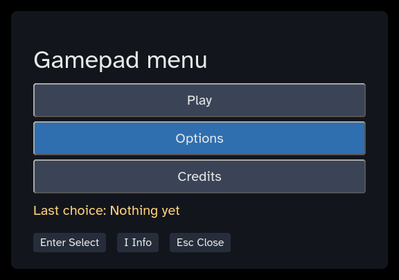

Input and gamepad¶
Use this page to make a menu that keyboard and gamepad drive: which keys press, which close, and what the project needs for them.
The GamepadMenu sample is a menu you drive with the keyboard or a gamepad: three buttons, an Info key of the menu's own, and Back, which closes it. The Confirm and Back keys, and the labels the screen shows for them, come from CommonUI, Unreal's UI input framework, so the project needs the input setup; the section below says what it contains.
The document¶
<meta name="input-mode" content="menu"/>
<meta name="input-mapping" content="/ArcRmlUISamples/UI/Rml/GamepadMenu/IMC_Sample_GamepadMenu"/>
<button id="gm-play" class="gm-button" autofocus="" data-event-click="call('', 'Choose', 'Play')">Play</button>
<button id="gm-options" class="gm-button" data-event-click="call('', 'Choose', 'Options')">Options</button>
<button id="gm-credits" class="gm-button" data-event-click="call('', 'Choose', 'Credits')">Credits</button>
<p class="gm-last">Last choice: {{ LastChoice }}</p>
<p class="gm-info" data-if="bInfoShown">Arrows or the D-pad move the focus, {{ ArcKeys.confirm }} presses the focused button, {{ ArcKeys.back }} closes the menu.</p>
<div class="gm-prompts">
<span class="gm-prompt">{{ ArcKeys.confirm }} Select</span>
<span id="gm-info" class="gm-prompt" data-hotkey="IA_Sample_MenuInfo" data-event-click="call('', 'ToggleInfo')">{{ ArcKeys.IA_Sample_MenuInfo }} Info</span>
<span class="gm-prompt">{{ ArcKeys.back }} Close</span>
</div>
input-modemenu: the document takes keyboard, gamepad and mouse input while it is open.- Arrows and the D-pad move the focus between the buttons. A
<button>is a form control, so it takes focus and is a navigation stop by default;autofocuson "Play" is where the focus starts. Adivorspanneedstab-index: auto; nav: autoto become one. - Confirm is always Enter, Space or gamepad accept (the gamepad's accept button, A in the samples) and presses the focused button. The CommonUI
click action only supplies its key label,
{{ ArcKeys.confirm }}. - Back is the back action of the project's CommonUI input data: Esc or gamepad back (B in the samples). A Back that no
data-event-backhandler stops closes the document. {{ ArcKeys.confirm }}and{{ ArcKeys.back }}show the keys of Confirm and Back for the current input device.
The code above is an excerpt: the screen also declares its view model in <head> and binds it with
data-model on <body>.
The menu's own action¶
input-mapping names a mapping context that the document adds while it is active. IMC_Sample_GamepadMenu maps
one action, IA_Sample_MenuInfo, to I and gamepad Y; it arrives as a UI action.
data-hotkey="IA_Sample_MenuInfo" clicks the element when that action fires, so "Info" calls ToggleInfo.
{{ ArcKeys.IA_Sample_MenuInfo }} shows the action's key, named by the action's asset name.
Keep Confirm and Back out of a document's mapping context: they belong to one project-wide context.
void UArcRmlSamplesGamepadMenuViewModel::Choose(const FString& Item)
{
UE_MVVM_SET_PROPERTY_VALUE(LastChoice, FText::FromString(Item));
}
void UArcRmlSamplesGamepadMenuViewModel::ToggleInfo()
{
UE_MVVM_SET_PROPERTY_VALUE(bInfoShown, !bInfoShown);
}
A hotkey on the focused row¶
data-hotkey clicks one element on the whole screen. data-hotkey-focus="<action>" clicks only the focused element or the
nearest ancestor of it that has the attribute, so one action works on every row of a list. The RowHotkeys sample has three
rows; the key marks the row that has focus as the favourite, whichever of its controls is focused:
<meta name="input-mapping" content="/ArcRmlUISamples/UI/Rml/RowHotkeys/IMC_Sample_RowHotkeys"/>
<div id="rh-row-0" class="rh-row" data-attrif-favourite="Favourite == 0" data-hotkey-focus="IA_Sample_RowAction" data-event-click="call('', 'SetFavourite', 0)">
<span class="rh-name">Potion</span>
<button id="rh-use-0" class="rh-use" autofocus="" data-event-click="call('', 'Use', 'Potion'); stopPropagation()">Use</button>
</div>
- The attribute sits on the row, not on a button inside it. With focus on "Use", the row is the ancestor that has it, and its
data-event-clickruns as if the row were clicked. - The "Use" button ends its click with
stopPropagation(), so using it does not also mark the favourite. - Only a visible element is clicked. When neither the focused element nor its ancestors have the attribute,
data-hotkeyanddata-hotkey-cycleare tried next. IMC_Sample_RowHotkeysmapsIA_Sample_RowActionto R and a press of the right thumbstick; the document'sinput-mappingmeta activates it (the menu's own action).
The code above is an excerpt: the rows "Scroll" and "Gem" are written like "Potion", and the screen also declares its view model.
Run it by choosing RowHotkeys in the samples list. The readout under the rows starts as Favourite: -1, used:. Press R on the first row: it reads Favourite: 0, used:. Press Down to move to the second row and R again: it reads Favourite: 1, used:. Press Enter on "Use" and used: shows the row's item name.
Project setup¶
The menu needs the CommonUI setup of Project setup, Input for menus, which also lists the sample input assets and their ini lines. A menu document whose Back action has no key logs a warning when it opens, and the validator reports it.
Run it¶
Play in the map L_ArcRmlSamples and choose GamepadMenu in the samples list. The second way is the console:
ArcRmlSamples.Open GamepadMenu
Move with the arrows or the D-pad, press Enter or gamepad A, press I or gamepad Y for "Info", and
Esc or gamepad B to close it. ArcRmlSamples.Close closes it too.
